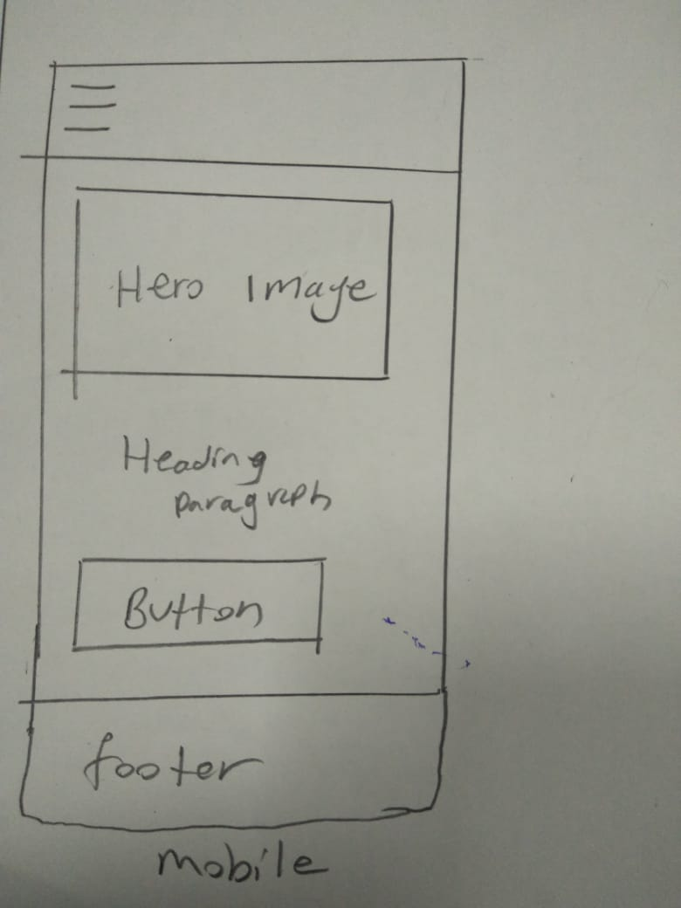
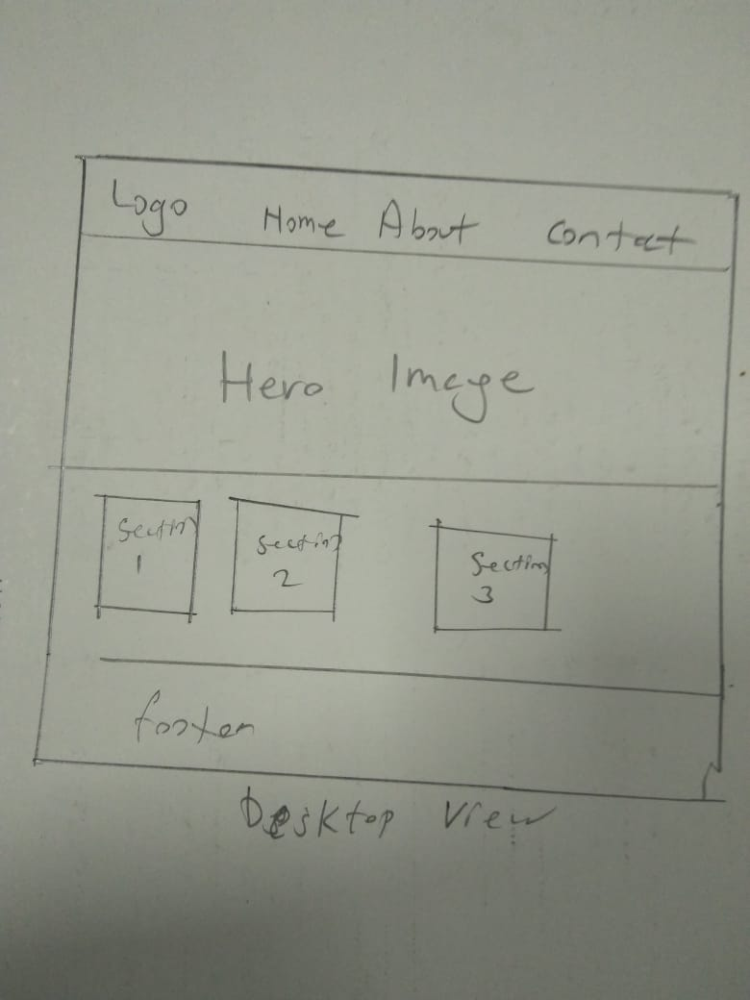

Sons of mosiah
Site Name: sons of mosiah Club
This name represents a club that is focused on waste management in the Nairobi Bay 1 Area.
Optional Domain Availability: waste-managent.org
Site Purpose
The site provides how we can come together so that we can make our environment clean and healty bu educating people the importance of environment on our daily life.
Scenarios
- What is the best tool we can use to make our environment clean
- Where can I find contact information for the club's directors?
Color Schema
The color scheme will use the following colors:
- Primary Color: #3498db (Used for the header and call-to-action buttons)
- Accent Color: #1abc9c (Used for hover effects on links)
Typography
The website will use the following fonts:
- Header Font: 'Roboto', sans-serif (Used for headings)
- Body Font: 'Open Sans', sans-serif (Used for paragraphs and general content)
Wireframe
The wireframe below outlines the layout of the homepage for both mobile and desktop views:
 